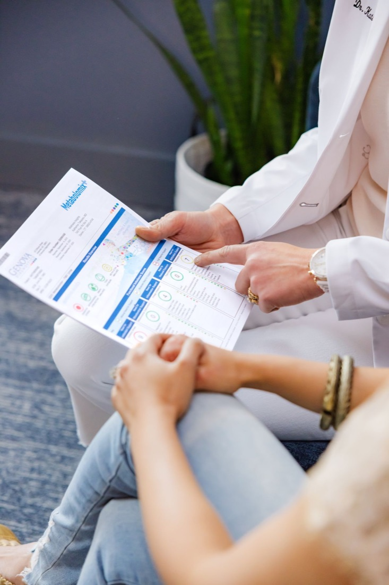

Redefining safety in medical tourism
An independent, London-based platform built so patients can check accreditation, licensing and regulatory status before making decisions about treatment abroad.
Our story
UK-Based & Mission-Driven
WhatClinicSafe.com is operated by WhatClinicSafe CIC, a company registered in England and Wales.
While WhatClinicSafe CIC is a private limited company, the platform is developed as a mission-driven initiative focused on public benefit, with an emphasis on transparency, accountability, and patient safety in global healthcare.
Our approach reflects a commitment to:
Prioritising patient safety and public interest
Promoting transparency and independent access to information
Reducing the risk of misleading healthcare marketing
Supporting ethical standards in medical tourism
We are not:
A booking agency
A medical provider
A referral or brokerage service

Transparency notice
No rankings, no paid placement
We do not rank, recommend, or prioritise clinics based on payments, advertising, or commercial arrangements.
Our role is limited to providing access to information for transparency and research purposes.
Being UK-based reinforces our commitment to high standards of governance, regulatory awareness, and responsible data handling.
Our mission
Supporting Informed Decisions in Global Healthcare
Each year, millions of patients travel internationally for medical treatment. While this can offer benefits, it may also involve lethal health risks, including differences in regulation, clinical standards, and legal protections and malpractice.
WhatClinicSafe.com supports users by providing tools to review and cross-check publicly available information before making decisions about treatment abroad. Independent research before treatment decisions.
The platform enables users to:
Review clinic identity and legitimacy
Check regulatory registration (where available)
Review accreditation information
Examine licensing status
Access publicly available compliance data
WhatClinicSafe CIC does not guarantee the accuracy, completeness, or current validity of third-party information. Users should independently verify all information with relevant authorities or providers.
Partnerships
Partnerships & Collaboration
WhatClinicSafe CIC operates in collaboration with MedicalTourismPlatform.com, supporting a shared objective of improving transparency and responsible practices in global healthcare.
This collaboration is intended to:
Enhance access to accreditation and regulatory information
Support informed patient decision-making
Promote ethical visibility of healthcare providers
No partnership or collaboration constitutes endorsement, certification, or approval of any healthcare provider.